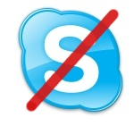

Skype out : autopsie et enseignements

Niels Bohr, prix nobel de physique en 1922, disait qu’« un expert est une personne qui a fait toutes les erreurs possibles dans un domaine très restreint. » Tant qu’à faire, si on peut apprendre des erreurs des autres, c’est peut-être un peu moins efficace mais certainement aussi beaucoup moins douloureux.
En l’occurrence, vous savez sans doute que le réseau Skype a connu les 16 et 17 août derniers une panne qui a privé de téléphone 220 millions d’utilisateurs pendant 2 jours (à relativiser tout de même, la plupart de ces utilisateurs enregistrés utilisant d’autres moyens de communication). Villu Arak a publié hier sur le blog de Skype ce billet qui revient sur l’autopsie de l’incident.
D’après cette analyse, l’étincelle a été une mise à jour Windows distribuée par Windows Update, qui a déclenché le reboot de dizaines de millions de PC dans un laps de temps très court. Il faut savoir que l’architecture de Skype (décrite dans cette excellente présentation trouvée ici) s’appuie sur un réseau P2P de Super Nodes hébergés sur les machines de certains utilisateurs, et que seul le Login Server reste centralisé. Mais ce dernier a été submergé de requêtes par les PC qui rebootaient. Les Super Nodes étant des clients comme les autres, très peu étaient fonctionnels, donc même les clients qui avaient réussi à contacter le Login Server ne trouvaient pas de Super Node, recommençaient probablement le processus, d’où un effet boule de neige.
Le billet parle de fonctions d’auto-réparation du réseau P2P qui n’ont pas joué leur rôle en raison d’un bug dans l’algorithme d’allocation des ressources réseau. Probablement une priorisation des requêtes des Super Nodes, et/ou une temporisation exponentielle des réessais en cas d’échec, qui n’ont pas fonctionné.
Cet incident montre en tout cas bien que les événements improbables finissent toujours par arriver. Maintenant cela aura-t-il un impact durable sur le business de Skype ? Sincèrement je ne pense pas. Comme le pointe à demi-mots le billet de Skype, les utilisateurs n’ont pas encore aujourd’hui un niveau de confiance très élevé dans les technologies du web. Beaucoup considèrent que les pannes sont le prix à payer pour ces nouveaux services, qui sont encore un simple complément aux services traditionnels que sont le bon vieux fixe ou le réseau mobile, beaucoup plus fiables.
À retenir en tout cas l’excellente communication de crise sur le blog de Skype avec une transparence totale dès le début de la crise, et un billet toutes les 6 heures pour tenir au courant de la résolution. En espérant que cette leçon-là n’ait pas à servir avant longtemps…